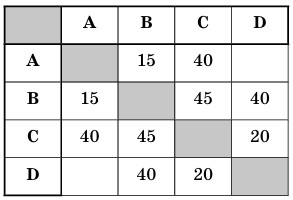

Test 1
| 1 |
В таблице приведена стоимость перевозок между соседними железнодорожными станциями. Укажите схему, соответствующую таблице.
 
|
|||
| 2 |
В таблице приведена стоимость перевозок между
соседними железнодорожными станциями. Укажи
те схему, соответствующую таблице.


 Таблица стоимости перевозок устроена следующим образом: числа, стоящие на пресечениях строк и столбцов таблиц, означают стоимость проезда меж ду соответствующими соседними станциями. Если пересечение строки и столбца пусто, то станции не являются соседними. Укажите таблицу, для которой выполняется условие: «Минимальная сто имость проезда из А в В не больше 6». Стоимость проезда по маршруту складывается из стоимо стей проезда между соответствующими соседни ми станциями. |
|||
| 3 | 2. Информационное сообщение объемом 3 Кбайта содержит 6144 символа. Сколько символов содержит алфавит, при помощи которого было записано это сообщение? | |||
| 1) 4 | 2) 16 | 3) 8 | 4) 32 | |
| 4 | Грунтовая дорога проходит последовательно через прибрежные населенные пункты А, В, С и D. При этом длина дороги между А и В равна 15 км, между В и С — 45 км и между С и D — 20 км. Расстояние по воде между А и D 60 км и работает паромное сообщение. Оцените минимально возможное время движения велосипедиста из пункта А в пункт С, если его скорость по грунтовой дороге 20 км/час, а паром (которым можно воспользоваться) двигается со скоростью 40 км/час. | |||
| 1) 1,5 часа | 2) 2 часа | 3) 2,5 часа | 4) 3 часа | |
| 5 |
Между населенными пунктами A, B, C, D построены дороги, протяженность которых приведена в таблице:  |
|||
| 1) 45 | 2) 55 | 3) 60 | 4) 70 | |
| 6 |
На схеме нарисованы дороги между пятью населен
ными пунктами A, B, C, D, E и указаны протяжен
ности данных дорог.
 Определите, какие два пункта наиболее удалены друг от друга (при условии, что передвигаться мож но только по указанным на схеме дорогам). В ответе укажите кратчайшее расстояние между этими пунктами. |
|||
| 1) 8 | 2) 7 | 3) 6 | 4) 4 | |
| 7 | Считая, что каждый символ кодируется 2 байтами, оцените объем следующего предложения в кодиров ке Unicode: Компьютер — универсальное средство обработки информации. | |||
| 1) 110 символов | 2) 124 байта | 3) 896 бит | 4) 1024 бита | |
| 8 | Реферат учащегося по истории имеет объем 110 Кбайт. Каждая его страница содержит 40 строк по 64 символа. При этом в кодировке один символ ко дируется 16 битами. Сколько страниц в реферате? | |||
| 1) 25 | 2) 22 | 3) 20 | 4) 18 | |
| 9 | В кодировке КОИ-8 каждый символ кодируется 8 битами. Сколько символов содержит сообщение объемом 0,5 Кбайта? | |||
| 1) 8192 | 2) 1024 | 3) 512 | 4) 256 | |
| 10 | Сочинение по литературе написано на 5 страницах, на каждой странице 32 строки по 48 символов. Ис пользовалась кодировка Unicode, где один символ кодируется 2 байтами. Каков информационный объем всего сочинения в Кбайтах? | |||
| 1) 15 | 2) 24 | 3) 48 | 4) 56 | |
Правильно:
Разработчики: Иванов Иван, Петров Андрей